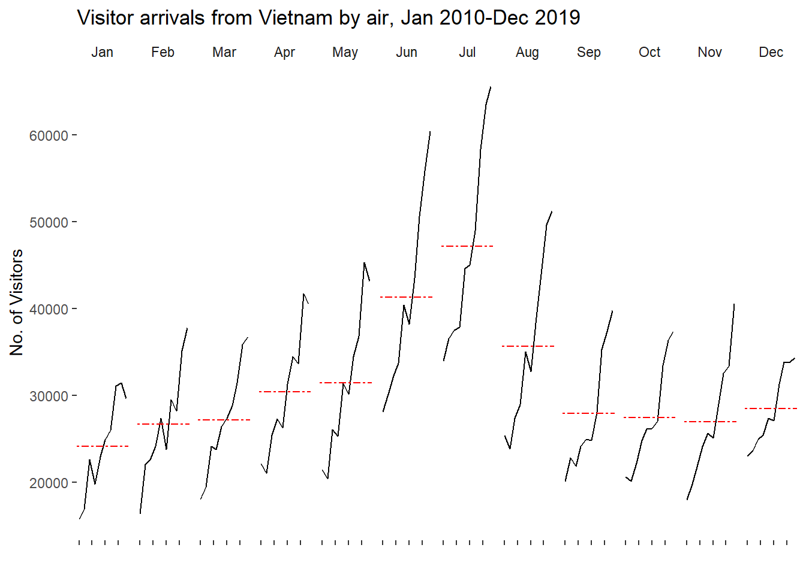
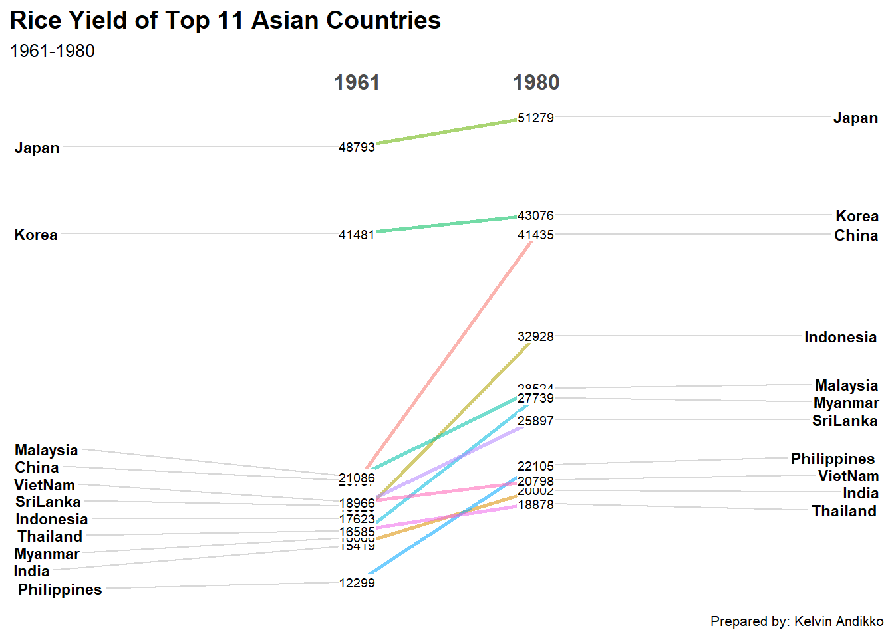

pacman::p_load(scales, viridis, lubridate, ggthemes,
gridExtra, readxl, knitr, data.table,
CGPfunctions, ggHoriPlot, tidyverse)Hands-On Exercise 8
This hands-on exercise will be exploring how time-oriented data can be visualised and analysed using R. In this exercise, we will work with three different types of time-based visualisations: calendar heatmaps, cycle plots and slopegraphs.
In this exercise, the following R packages will be used:
scales: used for formatting values such as percentages and axis labelsviridis: provides colour palettes that are useful for continuous data visualisationlubridate: used for handling date and time variablesggthemes: provides additional themes for improving the design ofggplot2chartsgridExtra: used for arranging multiple grid-based plotsreadxl: importing Excel files into Rknitr: used in building a static HTML tabledata.table: used for efficient data preparationCGPfunctions: provides thenewggslopegraph()function for plotting slopegraphsggHoriPlot: used for horizon plot visualisationtidyverse: R packages for modern data science and visual communication
The code block belows checks that the above packages are installed and loaded into the R working environment.
The next code block imports the datasets for this exercise:
attacks <- read_csv("../data/eventlog.csv")Rows: 199999 Columns: 3
── Column specification ────────────────────────────────────────────────────────
Delimiter: ","
chr (2): source_country, tz
dttm (1): timestamp
ℹ Use `spec()` to retrieve the full column specification for this data.
ℹ Specify the column types or set `show_col_types = FALSE` to quiet this message.air <- read_excel("../data/arrivals_by_air.xlsx")
rice <- read_csv("../data/rice.csv")Rows: 550 Columns: 4
── Column specification ────────────────────────────────────────────────────────
Delimiter: ","
chr (1): Country
dbl (3): Year, Yield, Production
ℹ Use `spec()` to retrieve the full column specification for this data.
ℹ Specify the column types or set `show_col_types = FALSE` to quiet this message.From the code chunk above:
attackscontains cyber attack records by timestamp, source country and time zone.aircontains visitor arrival records by air.ricecontains rice yield records for selected Asian countries.- These datasets will be used to demonstrate different forms of time-oriented visualisation.
Understanding time-oriented data visualisation
Time-oriented data visualisation is useful when the main purpose is to understand how values change across time. Unlike ordinary categorical charts, time-oriented charts need to preserve the temporal structure of the data.
There are several reasons why time-oriented visualisation is useful:
- It helps to reveal patterns that occur over hours, days, months or years.
- It helps to identify repeated cycles, such as monthly seasonality.
- It helps to compare how values change between two time periods.
- It helps to identify unusual periods where the behaviour differs from the usual pattern.
In this hands-on exercise, three types of time-oriented visualisations will be explored:
- calendar heatmap for showing patterns by weekday and hour
- cycle plot for showing seasonal patterns across months and years
- slopegraph for comparing changes between two selected years
Plotting calendar heatmap
In this section, a calendar heatmap will be created using ggplot2. A calendar heatmap is useful when we want to show how an event count varies across time units, such as weekday and hour.
For this part of the exercise, the cyber attack event log dataset will be used. Each row in the dataset represents one cyber attack record.
Examining the imported data
It is always good practice to examine the imported data frame before carrying out further data preparation.
The code chunk below displays the first few rows of the cyber attack dataset.
knitr::kable(head(attacks), format = "html")| timestamp | source_country | tz |
|---|---|---|
| 2015-03-12 15:59:16 | CN | Asia/Shanghai |
| 2015-03-12 16:00:48 | FR | Europe/Paris |
| 2015-03-12 16:02:26 | CN | Asia/Shanghai |
| 2015-03-12 16:02:38 | US | America/Chicago |
| 2015-03-12 16:03:22 | CN | Asia/Shanghai |
| 2015-03-12 16:03:45 | CN | Asia/Shanghai |
From the table generated, there are 3 variables in the dataset:
timestamp: stores the date and time of the cyber attack.source_country: stores the source country of the cyber attack using country code.tz: stores the time zone of the source IP address.
These fields are important because the calendar heatmap requires the timestamp to be transformed into weekday and hour fields.
Deriving weekday and hour fields
Before plotting the calendar heatmap, two new fields need to be created:
wkday: weekday of the attackhour: hour of the attack
The code chunk below creates a helper function to derive these two fields.
make_hr_wkday <- function(ts, sc, tz) {
real_times <- ymd_hms(ts,
tz = tz[1],
quiet = TRUE)
dt <- data.table(source_country = sc,
wkday = weekdays(real_times),
hour = hour(real_times))
return(dt)
}From the code chunk above:
ymd_hms()is used to convert the timestamp into a proper date-time object.weekdays()is used to extract the weekday from the date-time object.hour()is used to extract the hour of the day.data.table()is used to save the extracted fields into a table.
This function is useful because the timestamp conversion has to consider the relevant time zone.
Preparing the cyber attack data
The code chunk below applies the helper function to the cyber attack data and converts the weekday and hour fields into ordered factors.
wkday_levels <- c("Saturday", "Friday",
"Thursday", "Wednesday",
"Tuesday", "Monday",
"Sunday")
attacks <- attacks %>%
group_by(tz) %>%
do(make_hr_wkday(.$timestamp,
.$source_country,
.$tz)) %>%
ungroup() %>%
mutate(wkday = factor(wkday, levels = wkday_levels),
hour = factor(hour, levels = 0:23))What can we learn from the code chunk above?
group_by(tz)groups the records by time zone.do()applies the helper function to each time zone group.ungroup()removes the grouping after the transformation is completed.factor()is used to control the display order of weekday and hour in the plot.
The next code chunk displays the first few rows of the prepared data.
knitr::kable(head(attacks), format = "html")| tz | source_country | wkday | hour |
|---|---|---|---|
| Africa/Cairo | BG | Saturday | 20 |
| Africa/Cairo | TW | Sunday | 6 |
| Africa/Cairo | TW | Sunday | 8 |
| Africa/Cairo | CN | Sunday | 11 |
| Africa/Cairo | US | Sunday | 15 |
| Africa/Cairo | CA | Monday | 11 |
This table is useful because it allows us to check whether wkday and hour have been created correctly before plotting the heatmap.
Building the basic calendar heatmap
The code chunk below aggregates the number of attacks by weekday and hour.
grouped <- attacks %>%
count(wkday, hour) %>%
ungroup() %>%
na.omit()From the code chunk above:
count(wkday, hour)counts the number of attacks for each weekday and hour combination.ungroup()removes the grouping structure.na.omit()removes missing values from the aggregated data.- The result is saved as a tibble data frame called
grouped.
The code chunk below plots the calendar heatmap.
ggplot(grouped,
aes(hour,
wkday,
fill = n)) +
geom_tile(color = "white",
linewidth = 0.1) +
theme_tufte(base_family = "Helvetica") +
coord_equal() +
scale_fill_gradient(name = "# of attacks",
low = "sky blue",
high = "dark blue") +
labs(x = NULL,
y = NULL,
title = "Attacks by weekday and time of day") +
theme(axis.ticks = element_blank(),
plot.title = element_text(hjust = 0.5),
legend.title = element_text(size = 8),
legend.text = element_text(size = 6))Warning in grid.Call(C_stringMetric, as.graphicsAnnot(x$label)): font family
not found in Windows font database
Warning in grid.Call(C_stringMetric, as.graphicsAnnot(x$label)): font family
not found in Windows font database
Warning in grid.Call(C_stringMetric, as.graphicsAnnot(x$label)): font family
not found in Windows font databaseWarning in grid.Call(C_textBounds, as.graphicsAnnot(x$label), x$x, x$y, : font
family not found in Windows font databaseWarning in grid.Call(C_stringMetric, as.graphicsAnnot(x$label)): font family
not found in Windows font databaseWarning in grid.Call.graphics(C_text, as.graphicsAnnot(x$label), x$x, x$y, :
font family not found in Windows font database
Warning in grid.Call.graphics(C_text, as.graphicsAnnot(x$label), x$x, x$y, :
font family not found in Windows font database
Warning in grid.Call.graphics(C_text, as.graphicsAnnot(x$label), x$x, x$y, :
font family not found in Windows font database
Warning in grid.Call.graphics(C_text, as.graphicsAnnot(x$label), x$x, x$y, :
font family not found in Windows font database
Studying both the code chunk and the heatmap that is generated, there are 5 things to note:
geom_tile()is used to create the rectangular grid cells of the heatmap.fill = nmaps the number of attacks to the colour intensity.scale_fill_gradient()creates a two-colour gradient from low to high attack count.coord_equal()ensures that the grid cells are drawn using equal width and height.theme_tufte()removes unnecessary visual clutter and gives the plot a cleaner appearance.
The calendar heatmap is useful because it allows us to identify which weekday and hour combinations have relatively higher or lower numbers of cyber attacks.
Plotting multiple calendar heatmaps
The previous heatmap shows the overall attack pattern across all source countries. However, different countries may have different attack patterns across weekday and hour.
In this section, multiple calendar heatmaps will be plotted for the top four source countries with the highest number of attacks.
Identifying the top four countries
The code chunk below counts the number of attacks by source country and calculates the percentage share of attacks.
attacks_by_country <- count(attacks, source_country) %>%
mutate(percent = percent(n / sum(n))) %>%
arrange(desc(n))The code chunk below displays the top few countries by number of attacks.
knitr::kable(head(attacks_by_country), format = "html")| source_country | n | percent |
|---|---|---|
| CN | 85243 | 42.62171% |
| US | 48684 | 24.34212% |
| KR | 12648 | 6.32403% |
| NL | 8572 | 4.28602% |
| VN | 6340 | 3.17002% |
| TW | 3469 | 1.73451% |
From the code chunk above:
count(attacks, source_country)counts the number of attacks by country.mutate(percent = percent(n / sum(n)))derives the percentage contribution of each country.arrange(desc(n))sorts the countries from the highest to the lowest number of attacks.
Preparing data for the top four countries
The code chunk below extracts the top four countries and prepares the data for faceted heatmap plotting.
top4 <- attacks_by_country$source_country[1:4]
top4_attacks <- attacks %>%
filter(source_country %in% top4) %>%
count(source_country, wkday, hour) %>%
ungroup() %>%
mutate(source_country = factor(source_country, levels = top4)) %>%
na.omit()From the code chunk above:
top4stores the country codes of the four countries with the highest number of attacks.filter(source_country %in% top4)keeps only the attack records from these countries.count(source_country, wkday, hour)counts the attacks by country, weekday and hour.factor(source_country, levels = top4)ensures that the faceted plots follow the order of the top four countries.
Plotting the multiple calendar heatmaps
The code chunk below plots the multiple calendar heatmaps using facet_wrap().
ggplot(top4_attacks,
aes(hour,
wkday,
fill = n)) +
geom_tile(color = "white",
linewidth = 0.1) +
theme_tufte(base_family = "Helvetica") +
coord_equal() +
scale_fill_gradient(name = "# of attacks",
low = "sky blue",
high = "dark blue") +
facet_wrap(~source_country, ncol = 2) +
labs(x = NULL,
y = NULL,
title = "Attacks on top 4 countries by weekday and time of day") +
theme(axis.ticks = element_blank(),
axis.text.x = element_text(size = 7),
plot.title = element_text(hjust = 0.5),
legend.title = element_text(size = 8),
legend.text = element_text(size = 6))Warning in grid.Call(C_stringMetric, as.graphicsAnnot(x$label)): font family
not found in Windows font databaseWarning in grid.Call(C_textBounds, as.graphicsAnnot(x$label), x$x, x$y, : font
family not found in Windows font database
Warning in grid.Call(C_textBounds, as.graphicsAnnot(x$label), x$x, x$y, : font
family not found in Windows font database
Warning in grid.Call(C_textBounds, as.graphicsAnnot(x$label), x$x, x$y, : font
family not found in Windows font database
Warning in grid.Call(C_textBounds, as.graphicsAnnot(x$label), x$x, x$y, : font
family not found in Windows font databaseWarning in grid.Call.graphics(C_text, as.graphicsAnnot(x$label), x$x, x$y, :
font family not found in Windows font database
Warning in grid.Call.graphics(C_text, as.graphicsAnnot(x$label), x$x, x$y, :
font family not found in Windows font database
Warning in grid.Call.graphics(C_text, as.graphicsAnnot(x$label), x$x, x$y, :
font family not found in Windows font database
Warning in grid.Call.graphics(C_text, as.graphicsAnnot(x$label), x$x, x$y, :
font family not found in Windows font database
Warning in grid.Call.graphics(C_text, as.graphicsAnnot(x$label), x$x, x$y, :
font family not found in Windows font database
Warning in grid.Call.graphics(C_text, as.graphicsAnnot(x$label), x$x, x$y, :
font family not found in Windows font database
What is added into the code chunk above that improves the visual comparison?
facet_wrap(~source_country, ncol = 2)creates one heatmap for each of the top four source countries.- The same colour scale is used across the panels, which makes comparison easier.
- The weekday and hour structure is kept consistent for all countries.
- The plot title clearly states that the visualisation focuses on the top four countries.
This form of small multiple heatmap is useful because it allows us to compare whether different countries show similar or different attack patterns over time.
Plotting cycle plot
A cycle plot is useful for visualising seasonal patterns in time-series data. It is especially useful when the data contains repeated cycles, such as monthly patterns across multiple years.
In this section, a cycle plot will be created to show visitor arrivals from Vietnam by air.
Deriving month and year fields
The code chunk below derives two new fields from the Month-Year field in the air arrivals dataset.
air$month <- factor(month(air$`Month-Year`),
levels = 1:12,
labels = month.abb,
ordered = TRUE)
air$year <- year(ymd(air$`Month-Year`))From the code chunk above:
month()extracts the month number from theMonth-Yearfield.month.abbconverts the month number into abbreviated month labels.factor()is used to preserve the correct month order from January to December.year()extracts the year from theMonth-Yearfield.
Extracting the target country
The code chunk below extracts visitor arrival records from Vietnam from 2010 onwards.
Vietnam <- air %>%
select(`Vietnam`,
month,
year) %>%
filter(year >= 2010)From the code chunk above:
select()keeps only the Vietnam arrival count, month and year fields.filter(year >= 2010)keeps only records from 2010 onwards.- The resulting tibble data frame is saved as
Vietnam.
The code chunk below displays the first few rows of the prepared Vietnam dataset.
knitr::kable(head(Vietnam), format = "html")| Vietnam | month | year |
|---|---|---|
| 15781 | Jan | 2010 |
| 16335 | Feb | 2010 |
| 18061 | Mar | 2010 |
| 22154 | Apr | 2010 |
| 21461 | May | 2010 |
| 28146 | Jun | 2010 |
Computing the average arrivals by month
A cycle plot often includes a reference line to show the average value for each cycle. In this example, the monthly average visitor arrivals will be computed.
The code chunk below calculates the average arrivals for each month.
hline.data <- Vietnam %>%
group_by(month) %>%
summarise(avgvalue = mean(`Vietnam`),
.groups = "drop")From the code chunk above:
group_by(month)groups the data by month.summarise()computes the average visitor arrivals for each month..groups = "drop"removes the grouping after the summary table is created.- The monthly average values are saved in
hline.data.
Plotting the cycle plot
The code chunk below plots the cycle plot using ggplot2.
ggplot() +
geom_line(data = Vietnam,
aes(x = year,
y = `Vietnam`,
group = month),
colour = "black") +
geom_hline(aes(yintercept = avgvalue),
data = hline.data,
linetype = 6,
colour = "red",
linewidth = 0.5) +
facet_grid(~month) +
labs(title = "Visitor arrivals from Vietnam by air, Jan 2010-Dec 2019") +
xlab("") +
ylab("No. of Visitors") +
theme_tufte(base_family = "Helvetica") +
theme(axis.text.x = element_blank())Warning in grid.Call(C_textBounds, as.graphicsAnnot(x$label), x$x, x$y, : font
family not found in Windows font databaseWarning in grid.Call(C_stringMetric, as.graphicsAnnot(x$label)): font family
not found in Windows font databaseWarning in grid.Call(C_textBounds, as.graphicsAnnot(x$label), x$x, x$y, : font
family not found in Windows font database
Warning in grid.Call(C_textBounds, as.graphicsAnnot(x$label), x$x, x$y, : font
family not found in Windows font databaseWarning in grid.Call.graphics(C_text, as.graphicsAnnot(x$label), x$x, x$y, :
font family not found in Windows font database
Warning in grid.Call.graphics(C_text, as.graphicsAnnot(x$label), x$x, x$y, :
font family not found in Windows font database
Warning in grid.Call.graphics(C_text, as.graphicsAnnot(x$label), x$x, x$y, :
font family not found in Windows font database
Warning in grid.Call.graphics(C_text, as.graphicsAnnot(x$label), x$x, x$y, :
font family not found in Windows font database
Studying the code chunk above, there are 5 things to note:
geom_line()is used to draw the trend of visitor arrivals by year.group = monthensures that each month is treated as a separate time-series pattern.geom_hline()adds the monthly average reference line.facet_grid(~month)creates one panel for each month.theme_tufte()gives the plot a simple and clean appearance.
The cycle plot is useful because it allows us to compare changes within the same month across different years, while also keeping the seasonal structure visible.
Plotting slopegraph
A slopegraph is used to show how values change between two points in time. It is especially useful when the focus is on ranking, increase, decrease or relative change.
In this section, the rice yield dataset will be used to compare rice yield across selected Asian countries between 1961 and 1980.
Preparing the rice yield data
The code chunk below converts the Year field into a factor and keeps only the two target years.
rice_selected <- rice %>%
mutate(Year = factor(Year)) %>%
filter(Year %in% c(1961, 1980))From the code chunk above:
mutate(Year = factor(Year))convertsYearfrom a numeric field into a categorical field.- This is useful because a slopegraph compares selected time points as categories.
filter(Year %in% c(1961, 1980))keeps only the two years used for comparison.- The prepared data is saved as
rice_selected.
The code chunk below displays the first few rows of the prepared rice dataset.
knitr::kable(head(rice_selected), format = "html")| Country | Year | Yield | Production |
|---|---|---|---|
| China | 1961 | 20787 | 56217601 |
| China | 1980 | 41435 | 142876520 |
| India | 1961 | 15419 | 53494500 |
| India | 1980 | 20002 | 80312000 |
| Indonesia | 1961 | 17623 | 12084000 |
| Indonesia | 1980 | 32928 | 29651900 |
Building the slopegraph
The code chunk below uses the newggslopegraph() function to create a basic slopegraph.
rice_selected %>%
newggslopegraph(Year, Yield, Country,
Title = "Rice Yield of Top 11 Asian Countries",
SubTitle = "1961-1980",
Caption = "Prepared by: Kelvin Andikko")
Converting 'Year' to an ordered factorWarning: `aes_()` was deprecated in ggplot2 3.0.0.
ℹ Please use tidy evaluation idioms with `aes()`
ℹ The deprecated feature was likely used in the CGPfunctions package.
Please report the issue at <https://github.com/ibecav/CGPfunctions/issues>.Warning: Using `size` aesthetic for lines was deprecated in ggplot2 3.4.0.
ℹ Please use `linewidth` instead.
ℹ The deprecated feature was likely used in the CGPfunctions package.
Please report the issue at <https://github.com/ibecav/CGPfunctions/issues>.Warning: `aes_string()` was deprecated in ggplot2 3.0.0.
ℹ Please use tidy evaluation idioms with `aes()`.
ℹ See also `vignette("ggplot2-in-packages")` for more information.
ℹ The deprecated feature was likely used in the CGPfunctions package.
Please report the issue at <https://github.com/ibecav/CGPfunctions/issues>.
From the code chunk above:
Yearis used as the time variable.Yieldis used as the value to be compared.Countryis used as the grouping variable.Title,SubTitleandCaptionare used to provide context to the slopegraph.
The slopegraph is useful because it shows how the rice yield of each country changed between 1961 and 1980. Countries with upward sloping lines experienced an increase in yield, while countries with downward sloping lines experienced a decrease.
Summary of time-oriented visualisation methods
In this hands-on exercise, three types of time-oriented data visualisations have been explored.
The calendar heatmap is useful for showing how event frequency changes across two time-related dimensions. In this exercise, weekday and hour were used to understand cyber attack patterns.
The multiple calendar heatmap extends the basic heatmap by adding faceting. This allows the attack pattern of the top four source countries to be compared side by side.
The cycle plot is useful for showing seasonal patterns across repeated time periods. In this exercise, it was used to show visitor arrivals from Vietnam by month and year.
The slopegraph is useful for comparing values between two selected time points. In this exercise, it was used to compare rice yield across selected Asian countries between 1961 and 1980.
Overall, time-oriented visualisation is important because it helps us understand patterns, cycles and changes that may not be visible from a standard summary table.